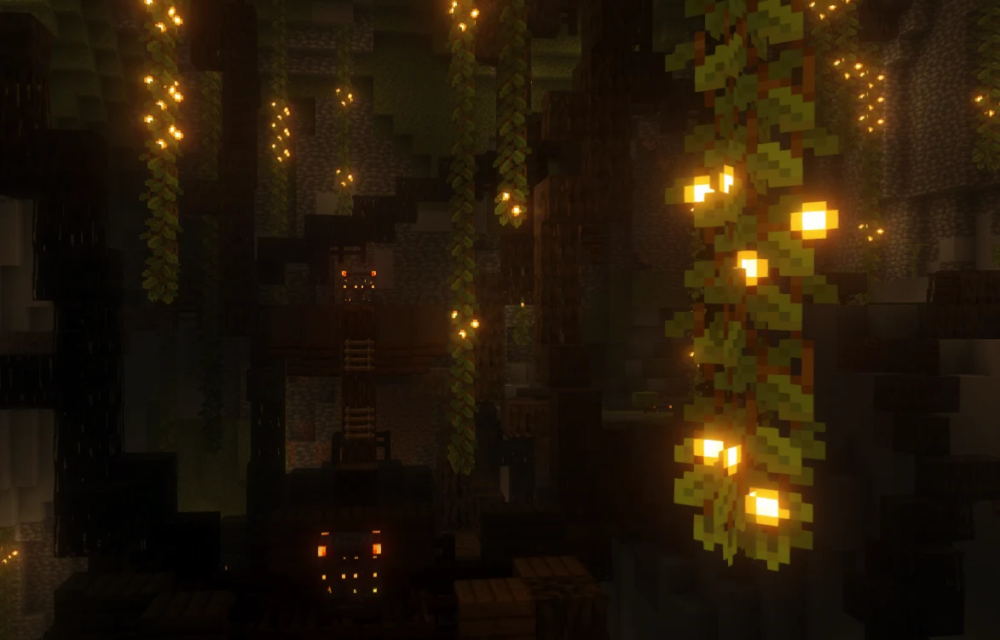
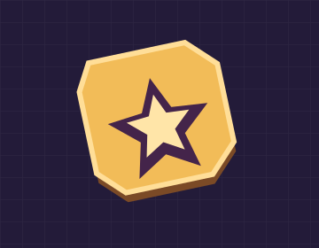
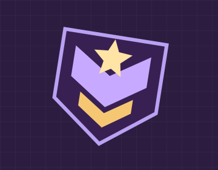
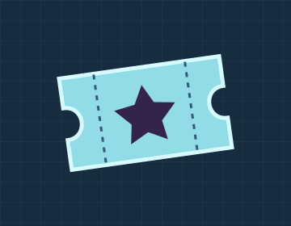
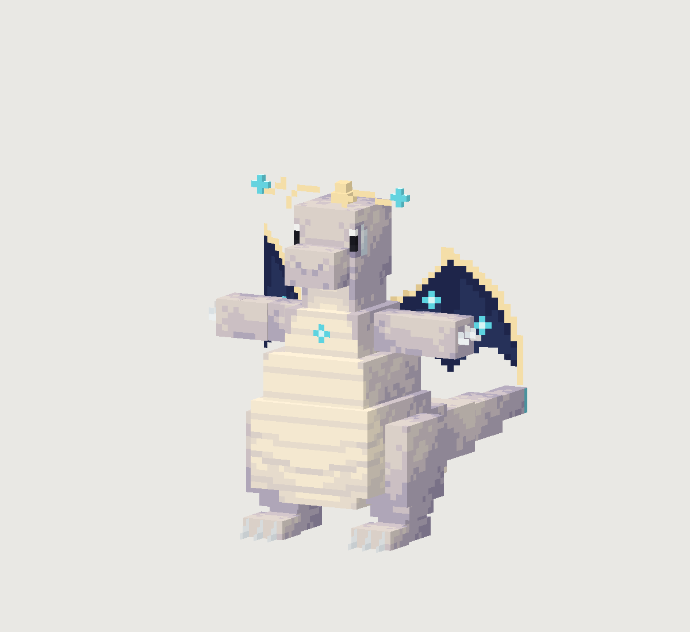

ASTERIA
Deux noms.
Une communauté.
Asteria et Nébélia. Des Pokémon à rencontrer, des coins à explorer et une place pour ton équipe.

NÉBÉLIA
Et après
la première capture ?
Une équipe à faire grandir. Des échanges à négocier. Des défis à relever ensemble.
Un peu plus
de CobbleStar.
Stars, grades, Cosmédex.
La boutique fait vivre le serveur. Découvre ce que chaque offre te réserve.

Les Stars
Recharge ta réserve pour les offres du serveur.
Découvrir ↗
Les grades
Étoilé. Cosmique. Galactique.
Découvrir ↗
Le Cosmédex
Effets, accessoires et apparences.
Découvrir ↗
ÉTOILÉ / COSMIQUE / GALACTIQUE
NOVA / PULSAR / QUASAR
COSMÉDEX / PASS DRESSEUR

Tu le reconnaîtras
entre mille.
Dracolosse Star. Des variantes, des objets et des interfaces créés pour CobbleStar.
Découvre les créations du projet et leurs prochaines annonces.
Suivre les créations (nouvel onglet)Il ne manque
plus que toi.
Rejoindre le Discord
(nouvel onglet)
Rejoins la communauté.
Les annonces, les échanges avec l’équipe et les nouvelles du projet.
Découvre le serveur.
Le wiki présente les systèmes et les premiers repères.
Rendez-vous à l’ouverture.
Le launcher sera proposé quand le serveur sera ouvert au public.
Avant de nous rejoindre.
Le serveur est-il ouvert ?
Pas encore. La date sera annoncée sur le site et sur Discord.
Quelle version de Minecraft faut-il ?
Minecraft Java 1.21.1 avec le pack compatible. Le launcher sera disponible à l’ouverture.
Où trouver les détails de la boutique ?
Les offres, les tarifs et les conditions sont présentés sur la boutique officielle (nouvel onglet) .